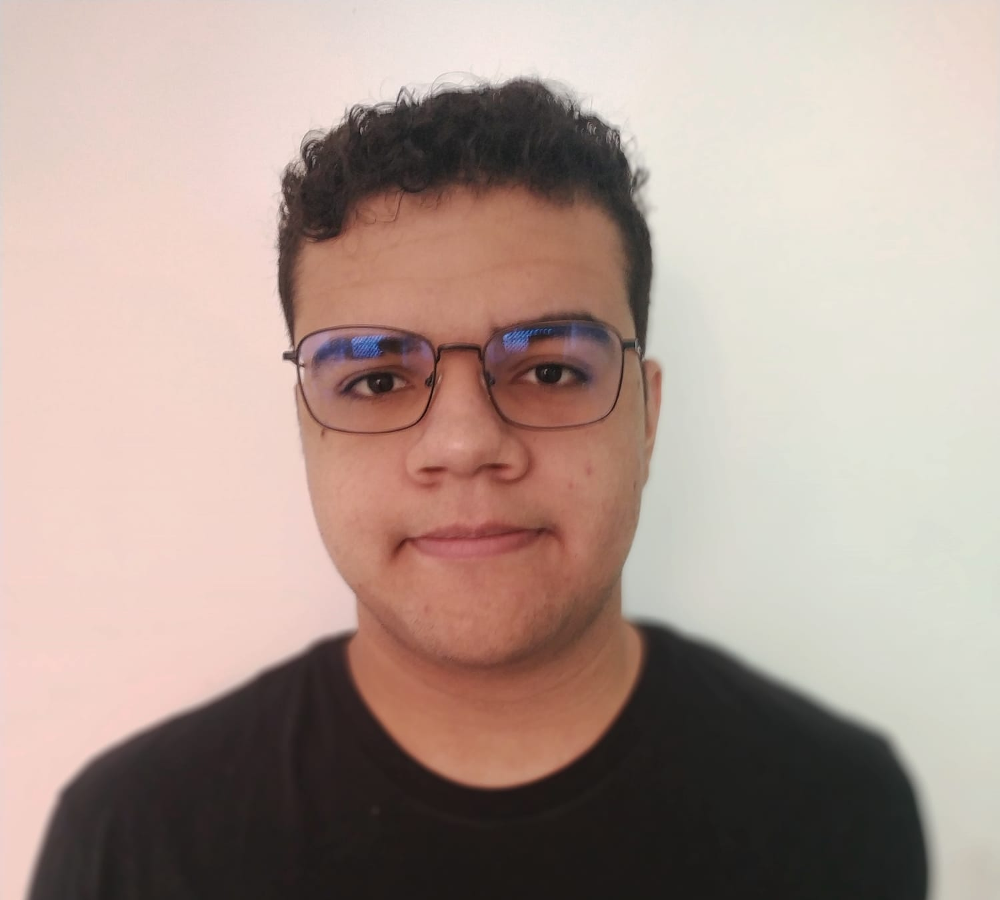
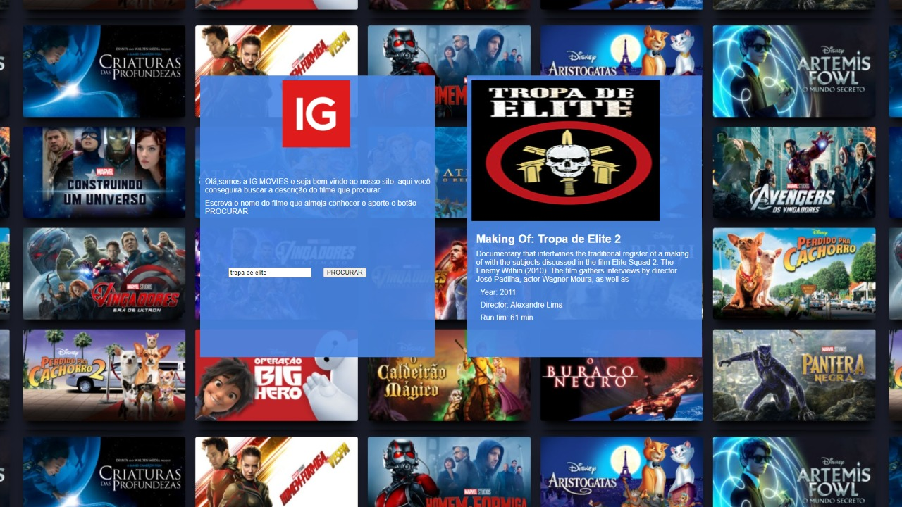
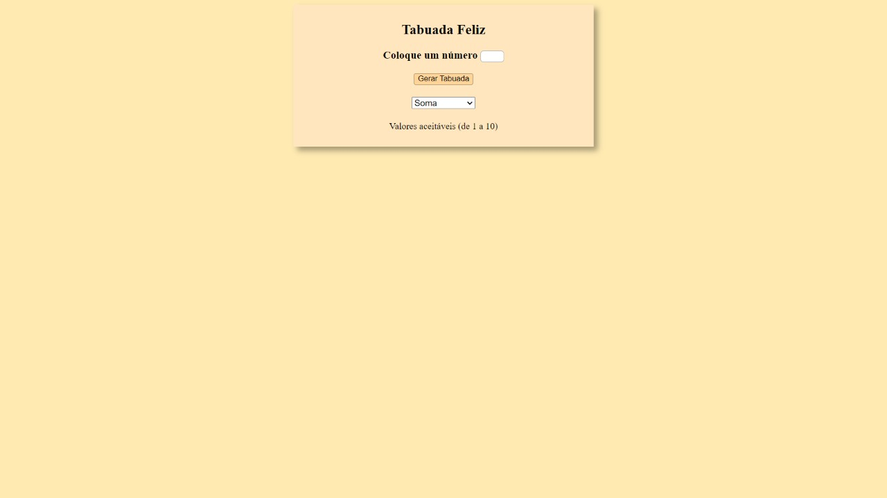
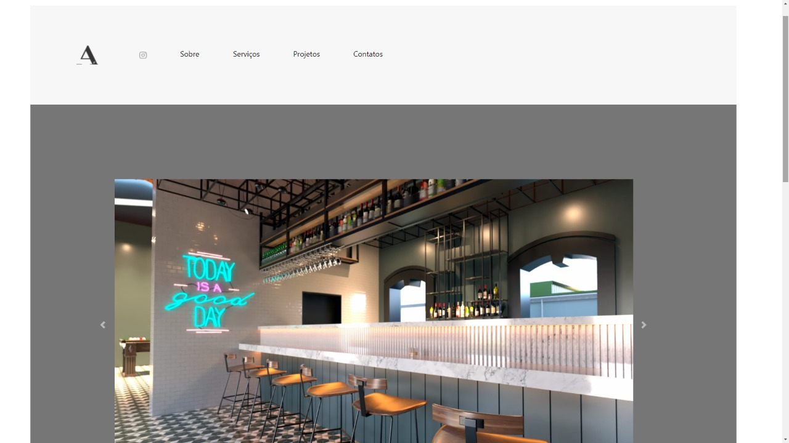
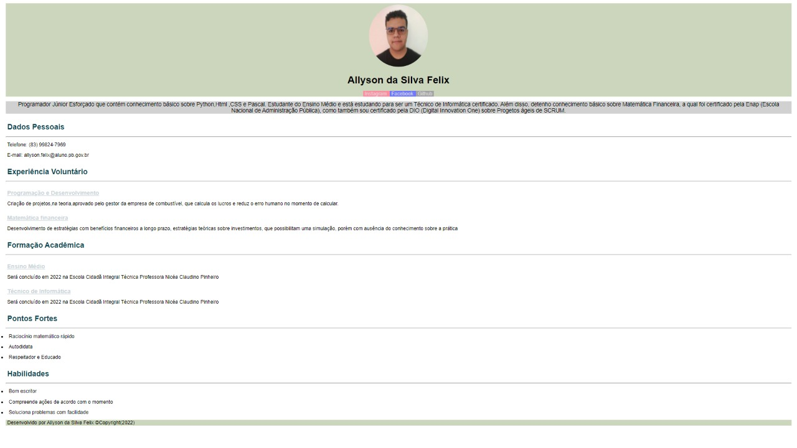

<!DOCTYPE html>
<html lang="pt-br">

<head>
    <meta charset="UTF-8">
    <link rel="stylesheet" href="style.css" />
    <meta name="viewport" content="width=device-width, initial-scale=1.0">
    <title>Meu portifólio</title>
    <link rel="stylesheet" href="https://stackpath.bootstrapcdn.com/bootstrap/4.1.3/css/bootstrap.min.css"
        integrity="sha384-MCw98/SFnGE8fJT3GXwEOngsV7Zt27NXFoaoApmYm81iuXoPkFOJwJ8ERdknLPMO" crossorigin="anonymous">
</head>

<body>
    <div class="tudo">
        <aside class="assi">
            
            <h2>Allyson da Silva Felix</h2>
            <h4> Estudante e Gerente Administrativo</h4>
            <hr style="width: 400px;">
            </hr>
            <div class="links_mid">
                <a href="https://www.instagram.com/allysonsfelix/" target="_blank" rel="external" class="mid">
                    
                </a>
                <a href="https://github.com/Allyson-SFelix" target="_blank" rel="external" class="mid">
                    
                </a>
                <a href="https://www.facebook.com/allison.felix.946" target="_blank" rel="external" class="mid">
                    
                </a>
            </div>
            <br>
            <nav class="menu">
                <ul>
                    <li>
                        <input type="radio" name="tabs" class="cont" id="tab_1" checked>
                        <label id="top_sobre">Sobre Mim</label>
                        <div class="text_1">
                            <h2 class="center" id="sobre"> OLÁ,PRAZER </h2>
                            <p class="center"> Meu nome é Allyson, sou paulista mas moro no interior da Paraíba,tenho 16 anos e estou
                                terminando o Ensino
                                Médio/Técnico de Informática.
                                Um dos meus objetivos e se tornar médico,mais precisamente um neurocirurgião.
                                Hoje tenho vários trabalhos,porém resumindo sou um Gerente Administrativo de uma empresa
                                de venda de
                                combustível.
                            </p>
                            <H4 class="center">Meu Hobby</H4>
                            <hr style="width: 16rem; height: 0rem;">
                            <p class="center">Sou corinthiano fanático, e um dos meus preferidos hobbys é assistir jogos dele. Além
                                disso, sou muito fã de futebol e de jogos eletrônios,como:PES 2021, Valorant, CS-GO,
                                entre outros jogos.
                            </p>
                            <h4 class="center"> Minha Rotina</h4>
                            <hr style="width: 16rem; height: 0rem;">
                            <p class="center">Procuro sempre estudar algo todo dia, faço cálculos mentais quando possível para manter
                                bem desenvolvido minha
                                lógica todos os dias.
                                Faço curso de Pré-Vestibular para atingir uma boa nota para o ENEM, e estudo umas 2
                                matérias por dia, sendo
                                ligado a essas matérias as questões de assuntos recorrentes, e também tento fazer 2
                                redações por mês e
                                corrigi-las.
                            </p>

                            <h4 class="center"> Meus Sonhos</h4>
                            <hr style="width: 16rem; height: 0rem;">
                            <p class="center">Um dos meus sonhos é conhecer o mundo e visitar lugares históricos e ver materias
                                históricos que estavam presentes nos livros didáticos.</p>
                            </div>
                    </li>
                

                    <li>
                        <input type="radio" name="tabs" class="cont" id="tab_2" checked>
                        <label id="top_projetos">Meus Projetos</label>
                        <div class="text_1">
                        <h3 class="center" id="projetos"> Projetos </h3>
                        <div class="card" style="width: 20rem;" id="card1">
                            
                            <div class="card-body">
                                <p class="card-text">Esse foi o quarto projeto desenvolvido por mim, que foi umas das atividades do Curso
                                    de Férias de Desenvolivmento Web, ministrado pelo Professor Givonaldo Cavalcanti, sobre a estrutura do site da Netflix</p>
                            </div>
                        </div>
                        <div class="card" style="width: 20rem;" id="card2">
                            
                            <div class="card-body">
                                <p class="card-text">Esse foi o terceiro projeto desenvolvido por mim, que foi umas das atividades do Curso
                                    de Férias de Desenvolivmento Web, ministrado pelo Professor Givonaldo Cavalcanti, sobre o desenvovlimento de uma tabuada web</p>
                            </div>
                        </div>
                        <div class="card" style="width: 20rem;" id="card3">
                            
                            <div class="card-body">
                                <p class="card-text">Esse foi o segundo projeto desenvolvido por mim, que foi umas das atividades do Curso
                                    de Férias de Desenvolivmento Web, ministrado pelo Professor Givonaldo Cavalcanti, sobre o desenvolvimento de um site para escritório</p>
                            </div>
                        </div>
                        <div class="card" style="width: 20rem;" id="card4">
                            
                            <div class="card-body">
                                <p class="card-text">Esse foi o primeiro projeto desenvolvido por mim, que foi umas das atividades do Curso
                                    de Férias de Desenvolivmento Web, ministrado pelo Professor Givonaldo Cavalcanti,sobre o meu Currículo</p>
                            </div>
                        </div>
                    </div>
                    </li>

                    <li>
                        <input type="radio" name="tabs" class="cont" id="tab_3" checked>
                        <label for="top_currículo" id="top_currículo">Currículo</label>
                        <div class="text_1">
                            <h2 id="curri">Meu Currículo</h2>
                            <p class="center"> Programador Júnior Esforçado que contém conhecimento básico sobre Python,Html ,CSS e
                                Pascal. Estudante do Ensino Médio e está estudando para ser um Técnico de Informática
                                certificado. Além disso, detenho conhecimento básico sobre Matemática Financeira, a qual
                                foi certificado pela Enap (Escola Nacional de Administração Pública), como também sou
                                certificado pela DIO (Digital Innovation One) sobre Progetos ágeis de SCRUM.</p>
                            <br>
                            <div class="formação">
                                <h4 class="center">Formação Acadêmica</h4>
                                <hr style="width: 16rem; height: 0rem;">
                                <ul>
                                    <li><b>Ensino Médio</b></li>
                                    <p>Será concluído em 2022 na Escola Cidadã Integral Técnica Professora Nicéa
                                        Claudino Pinheiro</p>

                                    <li><b>Técnico de Informática</b></li>
                                    <p> Será concluído em 2022 na Escola Cidadã Integral Técnica Professora Nicéa
                                        Claudino Pinheiro
                                    </p>

                                </ul>
                                <br>
                                <h4 class="center"> Pontos Fortes </h4>
                                <hr style="width: 16rem; height: 0rem;">
                                <ul><b>
                                        <li> Raciocínio matemático rápido</li>
                                        <li> Autodidata </li>
                                        <li> Respeitador e Educado</li>
                                </ul>
                                <br>
                                <h4 class="center"> Habilidades</h4>
                                <hr style="width: 16rem; height: 0rem;">
                                <ul>
                                    <li> Bom escritor </li>
                                    <li> Compreende ações de acordo com o momento</li>
                                    <li> Soluciona problemas com facilidade </li>
                                </ul>
                                </b>


                            </div>


                        </div>
                    </li>


                </ul>
            </nav>


        </aside>
    </div>
</body>

</html>